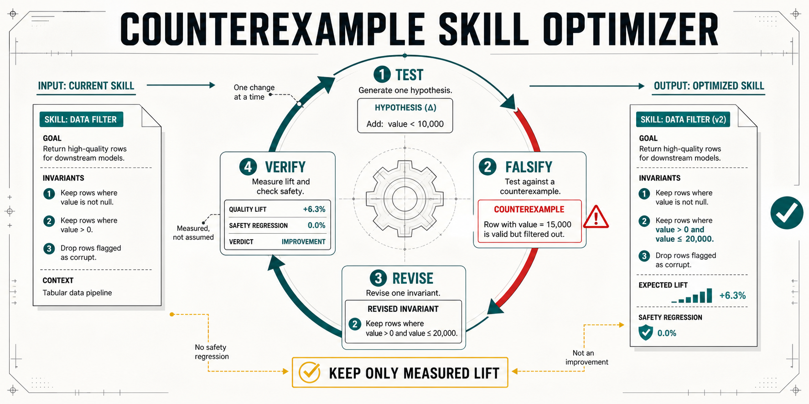

“Actually improves output” should be a result, not a review note.
Techne already promises a curated, versioned paid marketplace and checks that instructions improve agent output. SkillProof turns that judgment into a portable baseline-versus-candidate evidence record: same cases, explicit checks, zero hidden judge, no regressions, and hashes tied to the exact version.
Turn curation into inspectable evidence.
The pilot complements Techne's human review. It does not replace editorial judgment, and it does not pretend a small evaluation proves universal quality.
Techne curation
Is the skill properly scoped, commercially useful, fairly priced, and strong enough to deserve a place in a paid catalogue?
- Protects marketplace taste
- Uses human product judgment
- Rejects vague prompt packs
SkillProof evidence
On disclosed cases, did this exact candidate produce measurably better artifacts than its baseline without breaking a passing case?
- Backs the improvement claim
- Travels with each version
- Gives buyers inspectable proof
A listing badge backed by a report.
The public worked example is deliberately small and deterministic. Every claim links to the case-level evidence rather than a marketing score.

One owned skill. One week. One decision.
Start with Techne's first-party landing-page review example, so the experiment has no creator-consent bottleneck. Techne keeps control of policy and presentation.
Choose
Use one Techne-owned skill and state the exact artifact improvement its listing promises.
Measure
Score comparable baseline and candidate outputs with explicit artifact checks, then reject any regression.
Decide
Review the report and listing card. Add it to curation, revise it, or stop without a marketplace-wide commitment.
Make one review decision reproducible before changing the marketplace.
- 90-day non-exclusive internal license to SkillProof Kit v1.x
- Portable JSON report schema and embeddable evidence-card template
- Configuration and evidence-card adaptation for one Techne-owned skill
- Release provenance, deterministic packaging, and executable test suite
- One implementation walkthrough and 30 days of defect fixes
One-time pilot license. The private package arrives within two business days; the skill-specific evidence card follows after Techne supplies the selected package and representative artifacts.
Start via PayPalThe pilot measures disclosed cases; it does not certify universal model behavior or replace Techne's curation judgment. Techne branding and production deployment remain under Techne's control.